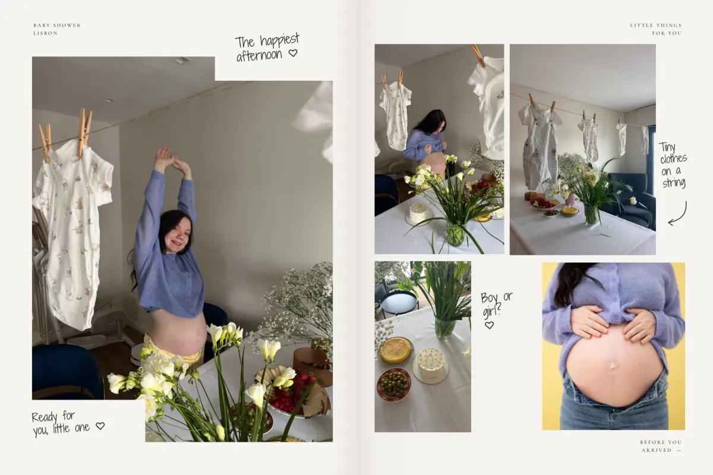
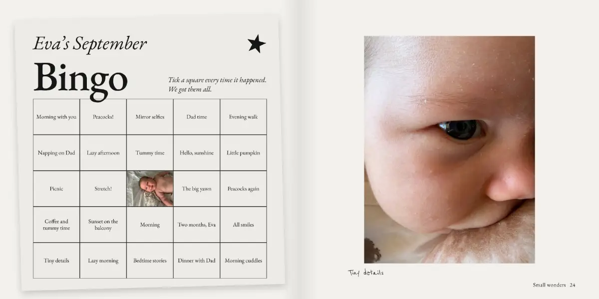

First Birthday Photo Book: The Whole Year in One Book
Updated Nov 2026 · by
Olga, designer at ReMeet, 10 years in editorial design
Your baby's first year in one designed photo book, organized month by month. Share your camera roll with ReMeet, and I pick the best shots from every stage, design every page, and send a proof in 72 hours. From $29. Printed copies from $69.

The first year problem
New parents take more photos than they ever have. The camera roll fills up fast: first bath, first smile, first solid food, first steps, the hospital bracelet, the tiny socks, the dog meeting the baby. By the end of year one, most parents have 2,000 to 5,000 photos on their phone.

That's too many to scroll through and way too many to sort into a book yourself. So the photos sit there. The birthday passes. Another year goes by. You still haven't made the book.
That's exactly what I designed ReMeet for. You share your album. I sort through all of it, pick the best moments from each month, and design a book that tells the story from day one to the birthday party.
Month by month is the simplest structure
I organize first-year books by month. Each month gets its own section with a small header (Month 1, Month 2, or the actual month name). This structure works because:
- It follows the natural timeline of milestones
- Months with big events get more pages automatically
- Quiet months still get represented with one or two pages
- You can flip to any month and find that stage instantly
A typical 30-page first birthday book has 2-3 pages per month, with a title page and a birthday party finale. If you want more room (holiday photos, extended family visits, a vacation), the 100-page option at $79 gives space for the full story.
What to include beyond the milestones
The classic milestones are obvious: rolling over, sitting up, first tooth, first steps. But the best first-year books also capture the everyday moments:

- The nursery before the baby arrived
- The hospital room, the drive home
- Sleeping in strange positions
- The first time they grabbed something
- Messy faces during solid foods
- Bath time, floor time, stroller walks
- Grandparents holding the baby for the first time
- The exhaustion on a parent's face at 3 a.m. (yes, include it)
Don't edit your camera roll before sending it. Send me everything. I pick the photos that work best for the layout, and I always choose the ones with real feeling over the ones that are technically perfect.
If you have trouble choosing what to send, the answer is simple: send it all.
Start your first birthday book
Share your camera roll. I'll organize it month by month and send a proof in 72 hours.
Start your book - from $29 →
Handwritten notes and keepsakes
Some parents keep a journal during the first year. Others write notes on their phone. If you have handwritten notes, letters, or cards, photograph or scan them and add them to the album. I place them next to the matching month's photos.
This works especially well for things like:
- A letter you wrote to the baby before they were born
- Monthly milestone notes ("Month 3: you discovered your hands")
- Cards from grandparents or friends
- The hospital wristband or footprint
These personal touches turn a photo collection into something you'll actually read years later. For more on writing personal text, see the captions guide.
Copies for the grandparents
First birthday books are one of the most popular gifts for grandparents. The grandparent photo book guide covers this in detail, but the basics: extra printed copies are $69 each, and I ship directly to their address. US and Canada shipping included, Europe +$15.
If you're ordering for multiple grandparents, the same design goes to everyone. You approve once, then tell me how many copies and where to ship them.
What comes next
The first birthday book is often volume one. Some parents continue with a book for year two, year three, and beyond. Each book is a separate $29 order. Over time, you build a shelf that tracks the whole childhood.
Others prefer a baby photo book that covers a longer stretch, like birth to age three. Either approach works. The important thing is that the first year gets its own book while the memories are still fresh.
Frequently asked questions
How many photos do I need for a first year book?
There's no minimum. For a 30-page book, 100-300 photos gives me plenty to work with. For 100 pages, 300-800 is a good range. Most parents have way more than that. Send everything and I pick the best.
What if I missed some months?
That's normal. Not every month has the same number of photos. I adjust the layout to match what you have. Months with fewer photos get one or two pages. Months with holidays or milestones get more. The book still flows.
Can I include photos from both parents' phones?
Yes. Create a shared Google Photos album and both add your photos. Or send two separate links. I merge everything and sort by date so the timeline stays in order.
Should I wait until after the birthday party?
If the party is coming up soon, wait. The birthday party photos make a great final chapter. If the party is weeks away and you want the book as a gift, I can leave the last pages for party photos and add them later.
Can grandparents get their own copy?
Yes. Extra printed copies are $69 each. Many parents order two or three copies for grandparents. US and Canada shipping is included, Europe is +$15.
Start your first birthday book
Share your album link. I'll design a month-by-month book and send a proof in 72 hours.
Start your book - from $29 →